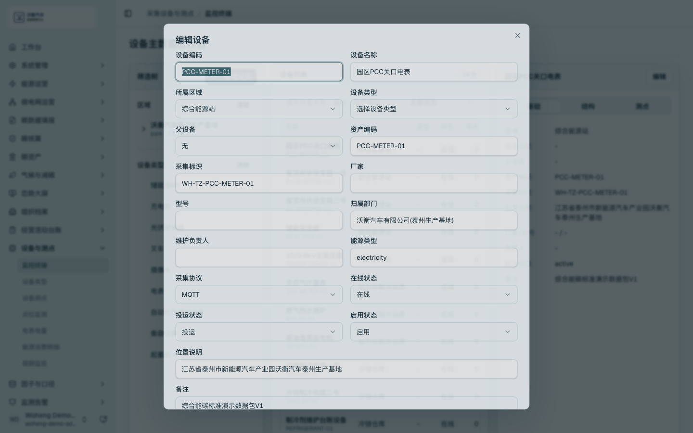
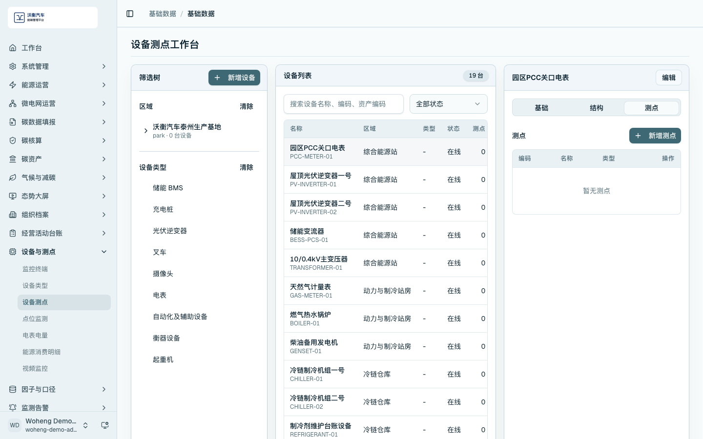
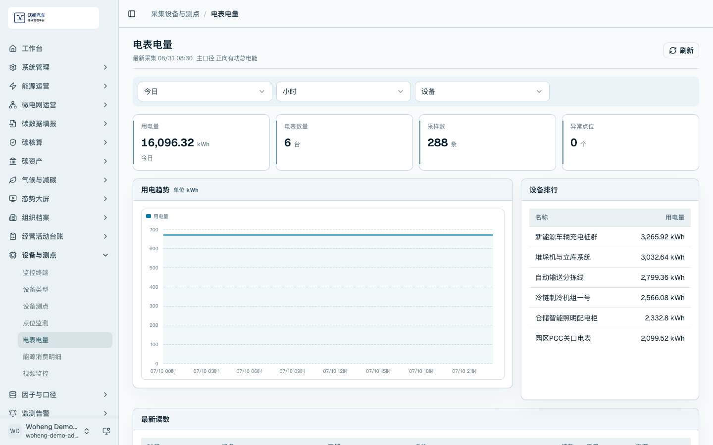
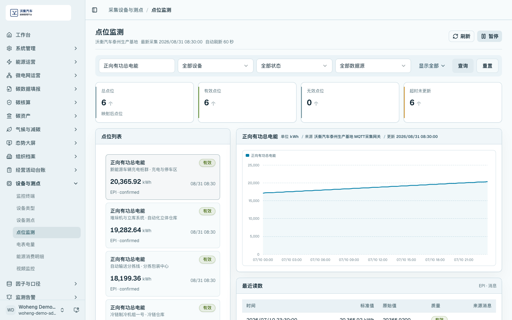
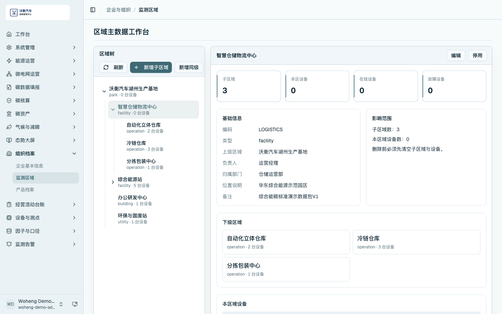

数据维护与 MQTT 电表接入
数据维护是平台闭环的基础。能源和碳数据进入平台主要有两类路径：一类来自 MQTT 电表、采集终端和设备测点；另一类来自经营活动台账和活动数据导入。
设备主数据
进入 /data/terminals，查看设备列表并打开设备编辑页。设备主数据应维护设备编码、设备名称、所属区域、采集标识、采集协议和在线状态。
对于 MQTT 电表，演示时重点说明电表设备、采集终端、测点编码、协议配置和业务区域之间的关系。设备配置可支撑后续电量趋势、监测告警、能耗统计和组织碳核算。

设备测点
进入 /data/device-points，按区域或设备筛选测点。设备测点用于维护电流、电压、电能、功率等采集项和业务含义。

电表电量采集结果
进入 /data/meter，查看最新采集、采样数、电表数量和用电趋势。该页面用于说明 MQTT 采集数据已经进入业务系统，并能按时间和设备形成统计。

点位监测与来源追溯
进入 /data/point-monitoring，搜索指定测点，查看最近读数、来源追溯和时序趋势。演示时可选择正向有功总电能等电表关键点位，说明采集数据从点位进入监测和统计链路。

区域主数据
进入 /data/monitor-area，查看区域树、基础信息和本区域设备。区域主数据用于支撑分区分项用能、区域碳排归集和告警定位。

数据维护检查项
- 设备、测点和区域之间应有明确归属关系。
- MQTT 电表要能看到采集协议、采集标识和测点配置。
- 电表采集页面应显示非空采样数据。
- 点位监测页面应显示最近读数和来源追溯。